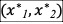
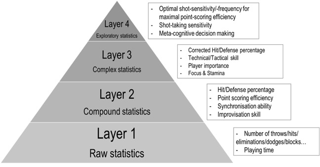

Sports Analytics Research
on Dodgeball
Team 11: Cole Henry, Yiran Li, Casey Mook, Mervyn Pais
Introduction
Description:
Most Americans were likely
introduced to dodgeball during gym class in elementary school. What started off
as a game played by African warriors, consisting of throwing rocks was brought
back to England and transformed into a more tame and structured sport in the
late 1800s. The first official ruleset for the game was published in 1905 by
Phillip Ferguson (Internationally, rules can vary slightly but are very similar
for the most part). A dodgeball court is cut in half and the two teams are
restricted to their respective half. To start, 6 dodgeballs are spaced across
the center line and each team of 6 players is behind their end line. When the
game begins, players race to the center to grab as many dodgeballs as possible
for their team. Then, the goal becomes to hit an opposing team member with a
dodgeball to get them out (headshots are allowed if unintentional). A player
who is out must wait on the sideline. If a ball is caught by an opponent before
hitting the ground, the thrower is out, and one player from the catcher’s team
re-enters the game from being out. Any player can use a dodgeball to block
themselves from getting hit. The game ends when all players from one team are
eliminated or (if it is a timed match) when time expires and the team with more
players left wins. There also exists multiple other court designs such as one
court design which features two jail sections at the ends of the court where
players who are out can still interact with the game. Like normal, any player
hit with a ball is out but goes to jail across from their team. Then, if they
catch a ball in jail thrown from their team, they re-enter the game.
Finance/Growth:
For most of the 20th century,
dodgeball was mostly played as a kids game at schools
but after the huge success of the 2004 movie Dodgeball: A True Underdog Story with Ben Stiller, it began to grow
in popularity with adults. As demonstrated by the 2018 Dodgeball World Cup
played in Madison Square Garden and broadcasted on ESPN, the sport is
continuing to grow in popularity all over the world. There have also been 7
World Dodgeball Championships played around the world with another set for
Edmonton in 2022. Many different leagues in varying countries have held
tournaments and competitions with prizes reported as large as $100,000. It’s
hard to say in what country dodgeball is now the most popular but the WDBF
(World Dodgeball Federation) rankings are as follows: Malaysia, US, Canada,
Australia, Mexico, New Zealand, Hong Kong etc. The WDBF is optimistic about
being recognized by the summer Olympics in 2028.
Defense (why
dodgeball):
Dodgeball is still small enough to
where not much statistical research has been done and this is
why we chose it. Despite exact numbers, it seems to be becoming more
prevalent based on mentions in articles and growth in tournaments. Since it is
at such an early point in its statistical career, we felt it would be
interesting and insightful to discuss how we can quantify what makes a great
dodgeball player. Is dodging or throwing more important in winning games? What
metrics and analysis could help improve the decisions players, coaches and
organizations make to improve their chances at winning? What makes the best
players stand out from average ones?
Literature Review
Ranking the
Teams and Players
Based on sports journalist Shotgun Spratling, there are four main skill positions (catchers,
corners, snipers, throwers), each requiring a certain set of abilities (Spratling). The catcher is considered the most important
player on the court because a catch not only gets your opponent out, but it
permits a teammate to re-enter the game. In other words, a catcher has the ability to create a two-player swing. Corners are
typically the pawns, and each team has two at this position. Based on the
situation they should be able to attack, defend, and/or sacrifice themselves.
Their main objective is to protect the other players on the court as well as be
a threat. A sniper sits back and targets vulnerable players. They are typically
players that know when to throw the ball at the right time and do so with
precision. ​​Throwers are the players that handle the ball the most. They are
considered to have the strongest arm on the team. What separates a good team
from a great team is the fact that players have multiple skill sets and are able to interchange between the different positions.
On a player basis, clutchness under pressure, patience, discipline on when to
throw or not seems to have a profound effect on what makes a player great. For
example, Nate Krieter, the two-time captain for team
USA is considered to be one of the best players in the
country according to Tyler Greer, a journalist for The Dodgeball Tribune. Krieter is
nicknamed “Mr. Klutch†due to his accuracy, strength,
court IQ, and strategic planning (Greer). Another example of a
well-above-average dodgeball player is Andrew Ketchum. He is considered to have
the most feared throw in all of dodgeball and a knack at catching any ball
thrown at him. He is able to throw well behind the
centerline with such ferocity and accuracy that it makes it difficult for his
opponents to counterattack. Being clutch seems to be a recurring theme in great
dodgeball players, however, clutchness is not a
factor that can be easily quantified, especially in this sport.
It is difficult to really find any
quantifiable measure to determine who the best player in dodgeball is due to
the low amounts of data being gathered. Tyler Greer’s analysis of the best
dodgeball players in the country is based on personal bias influenced by a player’s
talent, skills, and overall experience.
On a team ranking basis, the
director of officiating for the National Collegiate Dodgeball Association
(NCDA), Zigmas Maloni,
keeps an updated ranking list of the 2020 season based on 25 different
events/tournaments around the country ((Maloni). The
Gonzalez System is a common system used to rank the different college and
masters level teams. This system has been used to determine the bracket seeding
for the 2014 & 2017 Nationals. The way it works is that given these
factors; if the match was ranked, each team’s initial rating, the winning team,
the losing team, if a team is playing at their home venue, if the result was
decided in overtime, if the match was at Nationals, and the date of the event,
a ranking system can be made by modifying the team’s ratings based on if that
team wins or loses. The system initially finds the difference between the
rating of the two opponents. For example, if Team A has an initial rating of
50, while Team B has an initial rating of 45, the difference, or the rating
gap, will be 5. Then the system will convert that rating gap into an exchange
value, in our case, it will be 0.5 using the formula (for reference look at
Figure 0):
RatingsExchange = (NationalsModifer) * ((OvertimeModifier)
* ((((LosingTeam + HomeAdv)
-Â Â Â Â
                               (WinningTeam + HomeAdv)) *
K-Factor) + (K-Factor*10)))
Figure 0: Setup of how the Exchange
Formula value is achieved
The higher-rated team will be awarded that many points if
they win, while the losing team would lose that many points (in this case Team
A would be awarded 0.5 points and team B would lose 0.5 points). If Team B
wins, they would be awarded one plus that exchange value, so they would get 1.5
points, while Team A loses 1.5 points. using the system mentioned above as well
as given an extra point for having a home-field advantage. Games that go into
overtime are weighed less (the exchange value is multiplied by half), while
games that take place are Nationals are valued twice as much (the exchange
value is doubled). Prior to the exchange
values being modified for overtime or taking place at Nationals, they must
range between 0.010 and 2.000. The minimum value ensures that a weaker team
will not gain points for just playing a strong team, while the max value
ensures that a team will not unfairly gain too many points for a single
victory. However, this system allows for lower-seeded teams to obtain more
points for beating higher-seeded opponents.
The paper Dodge and survive: modeling the predatory
nature of dodgeball features the most in-depth analysis of the sport with
the ultimate goal of constructing a strategy to increase the win percentage.
Figure 1: The setup of a dodgeball
court based on one version of dodgeball rules
Using Rate Equation Description to
Understand the Game Dynamics
Before optimizing the win
percentage, it is necessary to understand the different game scenarios. Authors
Ruth and Restrepo create the Rate Equation Description of Game Dynamics by
combining several processes of throwing the ball and the scenarios
after the ball is thrown. The Rate Equation contains a pair of equations that
involve two variables: Â as the fraction of players in Team i in Court i, i = 1, 2.
Solving the Dodgeball Equations generated from different teams gives us
different combinations of solutions , which can be regarded as the fixed
points in the invariant square [0, 1] × [0, 1]. By analyzing
the linear stability of the fixed points, the game dynamics can be classified
in five different cases, and each game outcome depends on the strategies used
by both teams. When teams have opposite strategies, one of the teams can
quickly win, depending on the value of the probability of hitting and the
probability of saving. The Rate Equation Description of Game Dynamics helps us
understand the possible game scenarios. By using the known results, we are able to predict the specific case that is classified
from game dynamics.
However, there is some challenge to
this rate equation even if it provides interesting insights. The rate equation
description assumes there are an infinite number of players, making the
predictions for games with a finite number of players not reasonable. In
real-life scenarios, games are usually determined by the collective behavior of
a finite number of individual players. Therefore, one solution to that problem
is to model the dodgeball games by considering the stochastic behavior of
individual players, and so the insights provided by the rate equations are
useful to understand the stochastic dodgeball games.
Optimizing
the Victory
In the stochastic dodgeball games
section, the authors develop a strategy called Heuristic greedy strategy with
the goal of trying to optimize victory. Before creating the strategy, the
authors start off with creating the normalized quantity  defined as .  is a good indicator of how much control team i has because
it corresponds to the probability that team i will throw a ball next. The larger the  is, the better the chance for a team to win.
Therefore, in order to optimize the victory, it is
reasonable for Team i to apply a strategy to increase . To develop such a strategy, the
authors further define  and  as the values of before and after a ball is thrown.
Similarly, they define  and  as the values of  before and after a ball is thrown. According
to the paper, the basis of the strategy is to choose the value of  that maximizes the expected value of  and , where  is previously defined as the probability that
the ball is thrown at enemy players.
Data
Approach to Dodgeball
The article Introduction to Dodgeball Statistics, written by Darko Sarovic, aims to get insights into team tactics that could
be used to develop the game and to identify individual strengths and weaknesses.
The author splits the different statistics into four layers as shown in figure
2, which are in the increasing order of complexity.

Figure 2: Statistics pyramid
 The article uses the
data from The Central European Championship in 2019, recording and creating the
variables that are closely related to the success of each team. Those variables
include total play time for match or tournament, percent of match time, number
of sets played, average relative playing time, raw points, points per minute,
hit percentage, and defense percentage. By doing a linear regression analysis
to see how each hit and defense percentage determines point-scoring ability and
then weighting the variables accordingly, the author creates an engineered
variable called corrected technical skill. Sarovic’s
technical skill variable has a higher correlation with point-scoring ability
and probability of winning the set/match.
 A linear regression
on the number of throws against the number of hits reveals a relationship
showing the expected hit percentage. After plotting the number of throws
against the number of hits on the same graph, we are able to
know how good or bad the player is at making hits based on the residual,
irrespective of the number of throws or their hit percentage. The further up
and to the left the player is, the better. This allows for comparisons to be
made from game to game between players of different skills.
Figure 3: Relationship between the
number of throws and the number of hits
 Similarly, the author
uses the same methodology to analyze how hit and defense percentages relate to
point-scoring ability. As mentioned in the previous paragraph, if an observation
is above the regression line, then the score is higher than expected given
their hit percentage, and if an observation is below, they scored less than
expected. Defense percentage also shows a positive slope, but slightly less
than for hit percentage. The outcome when a ball is thrown is more dependent on
the skill of the thrower than that of the defender.
Figure 4: The relationship between
hit percentage and defense percentage with marker size representing points
scored per minute. The diagonal lines represent equal technical ability with regard to point scoring.
 Â
Using multiple regression, the
author is able to discover that hit and defense
percentages account for about 75% of the difference in points scored per
minute. It also shows that the relative importance of these skills differs. As
illustrated in Figure 4 above, and corroborated by the multiple regression
analysis, the hit percentage has roughly a two times bigger effect on point
scoring than the defense percentage. In other words, one will have more success
on the court if one spends more time improving their throw rather than their
defensive ability, and it is more likely that the team with better offensive
players will win over a team with equally good defensive players. Then the
author calculates their weighted average to get the variable technical skill,
which is a percentage indicating an individual’s overall success rate when
attacking and defending. To make the analysis more precise, the author weights
the hit percentage accordingly based on the fact that
throwing skill is twice as important as dodging ability. The weighted new
variable is the corrected technical skill score and has a higher correlation
with point-scoring ability and winning probability.
Future Work
Innovation 1:
​​We believe implementing a metric
in dodgeball similar to baseball’s Range Factor and
football’s Catch Radius could prove to be a powerful tool in helping not only
grow the sport but also aid in the decision-making process for organizations,
managers, and athletes. The Score
defines Catch Radius as “the space
occupied by the imaginary circle drawn when a receiver’s arms are
outstretched.” Using a player’s Catch Factor, as we call it, we would determine
the range of throws that could potentially result in a catch based on the
accuracy of a throw towards its target combined with distance from the target.
Catch Factor as well as our other metrics and innovations below would rely on
play-by-play data being available and would require future games to be logged
and recorded in much more detail. If done, Catch Factor would help us in determining
which catches are deemed uncatchable, which ones are too risky to try and catch
and which ones represent the greatest opportunity to shift the game and make a
catch. This could be very useful for many reasons. In a game where quick
decisions such as dodging, catching, and throwing all happen so fast, this
would allow athletes to have a heightened ability to quickly judge which balls
they should try and catch and which ones they should just dodge. This metric
would be able to predict probabilities of a catch based on the distance from
its target’s chest as well as the distance of the throw so that players would
know when it is better to dodge or go for a catch. Additionally, since it maps
the accuracy, this metric could pick up on trends of where throwers tend to aim
and what direction is best to dodge away from the ball. This would give players
a guide for when and where to dodge and when to catch rather than relying
solely on a player’s quick instincts every game.
Innovation 2:
Taking our idea of a “Catch Factor,”
we would then apply it towards a metric for Expected Points based on the state
of a throw. This metric would be calculated using Dodgeball’s point system
where eliminating an opponent generates +1 points, making a catch generates +2,
and vice versa in the negative aggregate. Expected Points would be very similar
to that of baseball’s Run Expectancy based on 24 base/out states (RE24).
Dodgeball is obviously a very different game than baseball as the positions of
the players and balls would result in an infinite number of states compared to
baseball’s 24. That is why this metric would exclude player positioning and be
focused on eliminations and catches. Figure 5 shown below details the process
for calculating the Expected Points for any given throw. This metric would have
the potential to completely change Dodgeball. Players could make smarter
decisions with where they throw a ball, how hard they throw it, as well as
whether they attempt to catch a ball. Also, these values would vary as the
state of the game changed (how many players each team has left). Coaches would
be able to rapidly improve their gameplans as they
would have state-based insights to make better decisions, which would result in
more organizational success. For example, catching may not be worth the risk
when all 6 players remain because a catch would only result in +1 points. A
late-game catch could lead to a predicted number of points greater than +2
depending on what the returning player of jail does. This would be extremely
valuable information for coaches and players.

Figure 5: Formulas for calculating
the expected points based on a throw
Innovation 3:
While Expected Points would be based
on the state of a throw, it would not consider the positioning of players when
someone is making a throw or catch. This led us to think of another innovative
idea involving zone-based tracking. We were curious if standing in certain
areas on the court would make players significantly more likely to be hit than
others. To be exact, we were curious to see what insights might result from
breaking up both sides of the court into zones and tracking eliminations and
catches. Which zones of the court are the most dangerous to be hit? Which zones
are you the most likely to get a catch in? Using Figure 6 as a reference, if
you were standing in zone B, from what zones are you the most likely to be
eliminated from? What zones are you less likely to be eliminated from? Through
large-scale data collection, we would have the knowledge needed to better
answer these questions and give players insights into the gravity of their zone
positioning as well as give coaches an improved ability to adjust player
positioning throughout a set and a greater chance at winning. Please note that
the figure below is an example of how zones could be drawn based on a general
dodgeball court and that different ones could be created based on the level of
the game and the rules being followed.
Figure 6: One example of a potential
dodgeball court broken up into zones
Innovation 4:
​​Our last idea for improving dodgeball-based sports analytics
is one that, if used with the other three already explained, could drastically
help improve a team’s strategy and result in more wins. We were curious as to
when the most eliminations in a match occur and whether this happens when a
team has more or fewer balls on their side? Balls are extremely valuable to a
team as they can be used to block balls thrown at them in addition to being
used to eliminate opposing players. We think looking at when eliminations and
catches occur over the course of a set, as well as tracking how many balls each
team has at any given moment could result in insights as to when a team is the
most likely to get eliminations or catches and potentially swing a game into
their favor. This innovation would also aid us in evaluating which players are
the most clutch as we would have documented instances of when a player may have
had a big elimination or catch to help their team win. Using this innovation
with zone-based tracking could help discover trends of when teams quickly lose
multiple players or when the best time to capitalize and eliminate players from
the opposing team is. This would result in more orchestrated movements and
better-constructed gamelans to capitalize on momentum-changing opportunities to
win more games.
Â
Conclusion
We
chose to study dodgeball because it’s a sport that everyone knows yet not many
people play professionally. It has been
growing in popularity recently which means people have started to analyze it
statistically but at the very base level for the most part. Given what little
analysis had been done, we felt that we could provide some good insights into
new metrics that could be created to better understand what factors influence
proficiency in the sport. Dodgeball gained most of its modern popularity after
the classic movie Dodgeball: A True
Underdog Story which led to more tournaments and competitions popping up in
the last 20 years all around the world. Studies have been done to try and
optimize victory, predict win percentage, and rate players based on their hit
rate / dodge rate compared to the average player. Dodgeball has a pretty simple
ruleset and these factors are the most obvious ones to
study first. Instead of just rating players, we wanted to create a few metrics
that could be helpful to players and coaches by actually
changing their in-game strategies. The research we found was a good
introduction but left us with lots of questions that we set out to answer with
our four innovations. When should you catch and when should you dodge? Which
dodging direction is most efficient in avoiding getting hit? How do the
different states of dodgeball affect win percentage and strategy? Where should
players line up on the court? What positions are dangerous
and which are safer? This list of questions could go on and on and made us
realize how expansive the world of dodgeball analytics could be. To summarize,
we came up with the idea to map where balls are thrown and determine when it is
worthwhile to try and catch or dodge, based on the expected gain in points. We
also wanted to study which formations of players were superior by tracking
which zones on a dodgeball court were the most points gained and lost? Finally,
we talked about the sweet spot for the number of balls for a team to have which
would help them decide when to throw and when to hold on, depending on the
situation.
If
dodgeball is accepted as an Olympic sport, it will definitely be studied more and we think our four innovations would be some of the
most important for teams to look at first to improve their game.
Work
Cited
"Are You The Next Dodgeball Champion?". Australian Dodgeball
Federation, 2021, https://www.dodgeballaustralia.org.au/national-team.
Ashbrock,
Jonathan. “The Best Tool for Decision Making in Baseball.†Medium, Towards Data Science, 10 July 2020,
https://towardsdatascience.com/the-best-tool-for-decision-making-in-baseball-24d1a7eb96b4.
Cantor, Matt.
"Adults Are Making Big Money Playing ... Dodgeball". Newser, 2021,
https://www.newser.com/story/192202/adults-are-making-big-money-playing-dodgeball.html.
Greer,
Tyler. "A Look Into The USA Men’S
Dodgeball Team". Medium, 2021,
https://medium.com/thedodgeballtribune/a-look-into-the-mens-team-usa-dodgeball-e84c4982829c.
Greer,
Tyler. "The Top 50 Men In US Dodgeball (Part
3)". Medium, 2021,
https://medium.com/thedodgeballtribune/the-top-50-men-in-us-dodgeball-part-3-4c527ad4fce8.
Maloni, Zigmas
(Zigmister). "Standings As Of 2019-10-08 –
NCDA". Ncdadodgeball.Com,
2021,
http://ncdadodgeball.com/blog/standings-as-of-2019-10-08/15301.
"Official
Dodgeball Rules & NDL Regulations Of Play".
Thendl.Com, 2021,
http://thendl.com/thendl-dodgeball-101.asp.
Ruth,
Perrin E., and Juan G. Restrepo. “Dodge and survive:
modeling the predatory nature of dodgeball.†APS and the Physical Review, vol. Vol. 102, no. Iss.
6 — December 2020, 2020, p. 9. APS and
the Physical Review,
https://journals.aps.org/pre/abstract/10.1103/PhysRevE.102.062302.
Sarovic, Darko. “Dodgeball
analysis through data science and statistics — DARKO SAROVIC.†DARKO SAROVIC, 23 December 2019,
https://www.darkosarovic.com/blog/dodgeball-statistics-introduction. Accessed 6
December 2021.
Spratling,
Shotgun. "Your Dodgeball Position/Lingo Guide - Wehoville".
Wehoville, 2021,
https://wehoville.com/2012/10/21/your-dodgeball-positionlingo-guide/.
"The
Top 10 Rules Of Dodgeball". Rookieroad.Com, 2021,
https://www.rookieroad.com/dodgeball/the-top-10-rules/.
Tomlinson, Sean. “The 5
Different Ways to Be a Successful NFL Wide Receiver.†TheScore.com, TheScore, 2014,
https://www.thescore.com/nfl/news/517885.